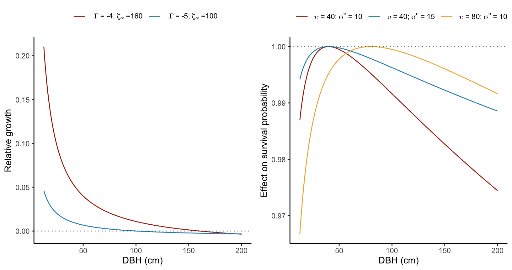

4 Mixed covariates
In this study, our main objective is to assess how climate and competition affect the demographic rates of tree species and, hence, shape their range distribution. Climate, typically characterized by temperature and precipitation, is widely assumed to be an essential factor affecting vital rates and has been the focus of recent studies for tree species (Csergő et al. 2017; Le Squin, Boulangeat, and Gravel 2021; Kunstler et al. 2021; Guyennon et al. 2023). Climate also exerts an indirect influence by shaping species composition, which impacts the variation in demographic rates through species interactions. Indeed, competition for light has been shown as a principal driver in the demographic rates of forest trees (Zhang, Huang, and He 2015; Le Squin, Boulangeat, and Gravel 2021).
Additional factors influence forest tree growth, survival, and recruitment beyond the climate-competition dimensions. For instance, events like wildfire and insect outbreaks play crucial roles in changing demographic rates, particularly considering these disturbances are sensitive to climate change (Seidl, Schelhaas, and Lexer 2011). However, it is important to note that such disturbances are sporadic, and our primary focus is understanding responses to average conditions. At the local scale, soil nitrogen can improve growth rate (Ibáñez et al. 2018) and facilitation can improve performance at range limits (Ettinger and HilleRisLambers 2017). At a local scale, soil nitrogen content can enhance growth rates (Ibáñez et al. 2018), and facilitation can increase recruitment rates at range limits (Ettinger and HilleRisLambers 2017). All these factors and others not cited here can potentially affect the demographic rates of forest trees. However, our objective here is not to have the best and most complex model to achieve the highest predictive metric but to make inferences (Tredennick et al. 2021). Specifically, we aim to test the relative effect of climate and competition while controlling for other influential factors. Therefore, our modeling approach is guided by biological mechanisms, which tend to provide more robust extrapolation (Briscoe et al. 2019) rather than being solely dictated by specific statistical metrics.
In the following sections, we describe the inclusion of covariates into each demographic model. We start by incrementing the intercept growth, survival, and recruitment models, as described in the previous section, with plot random effects to account for the spatial heterogeneity among plots. Then, building on the intercept model with plot random effects, we introduce the competition for light components using individual basal area information. Finally, we complete the model by incorporating the climate component, including the effects of mean annual temperature (MAT) and mean annual precipitation (MAP).
It is worth noting that, due to the use of structured population models, the demographic models should vary as a function of the size trait. The von Bertalanffy growth model implicitly incorporates the size effect within the model. For survival, we initially included individual size as a covariate, following a lognormal distribution to capture the potential higher mortality rates for small individuals (due to competition) and large individuals (due to senescence). However, all models incorporating the size covariate performed worse than the baseline model (we discuss the details in Chapter 6). Therefore, we chose not to include the size covariate in the survival model. Additionally, due to the unavailability of data for the regeneration process, we used an ingrowth rate model independent of size. Consequently, only the growth model varies as a function of individual size.
Plot random effects
We use random effects to account for the shared variance among individuals within the same plot in each demographic model. In the context of each species-demographic model combination, we draw plot random effects (\(\alpha_j\)) from a normal distribution with a mean of zero, defined as:
\[ \alpha_{j} \sim N(0, \sigma) \]
where \(\sigma\) represents the variance among all plots \(j\). Note that both parameters, \(\alpha_j\) and \(\sigma\), are species and demographic model-specific. These plot random effects (\(\alpha_j\)) serve to adjust the intercept parameters (\(I\)) within each demographic model as follows:
\[ I_j = \overline{I} + \alpha_j \]
Where \(I\) can assume one of three forms: \(\Gamma\) for the growth, \(\psi\) for the survival, and \(\phi\) for the recruitment model.
Size effect
For the growth model, the size effect is implicitly incorporated in the model. Specifically, following the von Bertalanffy model’s definition, an individual’s growth rate decreases exponentially with size, eventually reaching a zero growth rate as size approaches \(\zeta_{\infty}\) (Figure 4.1).
In the survival model, the intercept longevity (\(\psi\)) varies as a log-normal function of individual dbh as follows:
\[ \psi + \frac{ ln(\frac{dbh}{\upsilon}) }{\sigma_{\upsilon}} \]
Here, \(\upsilon\) determines the size at which survival is optimal, and \(\sigma_{\upsilon}\) quantifies the extent of survival decrease from the optimal size. A higher parameter value corresponds to a reduced effect of size on the survival probability (Figure 4.1).
Competition effect
We use the basal area of larger individuals (BAL) as a metric for competition. We calculated basal area as the sum of the cross-sectional areas of all trees within a plot, derived from their diameter at breast height (dbh) measurements, and its unit is square meters per hectare. We calculate the competition intensity for each focal individual by summing the basal area of all individuals with a size greater than that of the focal individual. We differentiate this sum of basal area between conspecific and heterospecific individuals. More details can be found in the Chapter 2.
Both the growth (\(\Gamma\)) and longevity (\(\psi\)) intercept parameters decrease exponentially with BAL. This negative effect of BAL on growth and longevity is driven by two parameters that describe the effect of conspecific (\(\beta\)) and heterospecific (\(\theta\)) competition:
\[ \Gamma + \beta_{\Gamma} \times (BAL_{cons} + \theta_{\Gamma} \times BAL_{het}) \]
\[ \psi + \beta_{\psi} \times (BAL_{cons} + \theta_{\psi} \times BAL_{het}) \]
When \(\theta < 1\), it means that conspecific competition is stronger than heterospecific competition. Conversely, heterospecific competition prevails when \(\theta > 1\), and when \(\theta = 1\), there is no distinction between conspecific and heterospecific competition (Figure 4.2). Note that both \(\beta\) and \(\theta\) are unbounded parameters that either converge towards negative (indicating competition) or positive (indicating facilitation) values.
For the recruitment model, conspecific and heterospecific BAL affect different components of the model. Conspecific BAL, or the total conspecific plot basal area (as recruitment is necessarily smaller than any adult individual), has an unimodal effect on the annual ingrowth rate (\(\phi\)). This effect is characterized by an optimal basal area for ingrowth at \(\delta^{\phi}\) and an increased effect controlled by the parameter \(\sigma^{\phi}\):
\[ \phi - \left(\frac{BAL_{cons} - \delta_{\phi}}{\sigma_{\phi}}\right)^2 \]
The underlying concept of this equation is that the ingrowth rate should increase with conspecific density, but only up to a certain point determined by \(\delta^{\phi}\). The ingrowth rate is expected to decrease at higher densities due to competition (Figure 4.3).
Finally, the annual survival probability reduces exponentially with the total basal area of the plot, where there is no distinction between conspecific and heterospecific competition:
\[ \rho + \beta_{\rho} \times (BAL_{cons} + BAL_{het}) \]
Climate effect
As we focus on inference rather than prediction, we chose not to conduct model selection concerning the climate variables. Instead, we opted for the mean annual temperature (MAT) and mean annual precipitation (MAP) as our chosen bioclimatic variables widely used for species distribution modeling. Each demographic function varies in function of a bell-shaped curve determined by an optimal climate condition (\(\xi\)) and a climate breadth parameter (\(\sigma\)) as follows:
\[ \Gamma + \left(\frac{MAT - \xi_{\Gamma, MAT}}{\sigma_{\Gamma, MAT}}\right)^2 + \left(\frac{MAP - \xi_{\Gamma, MAP}}{\sigma_{\Gamma, MAP}}\right)^2 \]
\[ \psi + \left(\frac{MAT - \xi_{MAT}}{\sigma_{\psi, MAT}}\right)^2 + \left(\frac{MAP - \xi_{\psi, MAP}}{\sigma_{\psi, MAP}}\right)^2 \]
\[ \phi + \left(\frac{MAT - \xi_{\psi, MAT}}{\sigma_{\psi, MAT}}\right)^2 + \left(\frac{MAP - \xi_{\psi, MAP}}{\sigma_{\psi, MAP}}\right)^2 \]
The climate breadth parameter (\(\sigma\)) influences the strength of the specific climate variable’s effect on each demographic model (Figure 4.4). This unimodal function is flexible as it can assume various shapes to accommodate the data better. However, this flexibility also introduces the possibility of parameter degeneracy or redundancy, where different combinations of parameter values yield similar outcomes. To mitigate parameter degeneracy, we constrained the optimal climate condition parameter (\(\xi\)) within the observed climate range for the species, thereby assuming that the optimal climate condition falls within our data range.